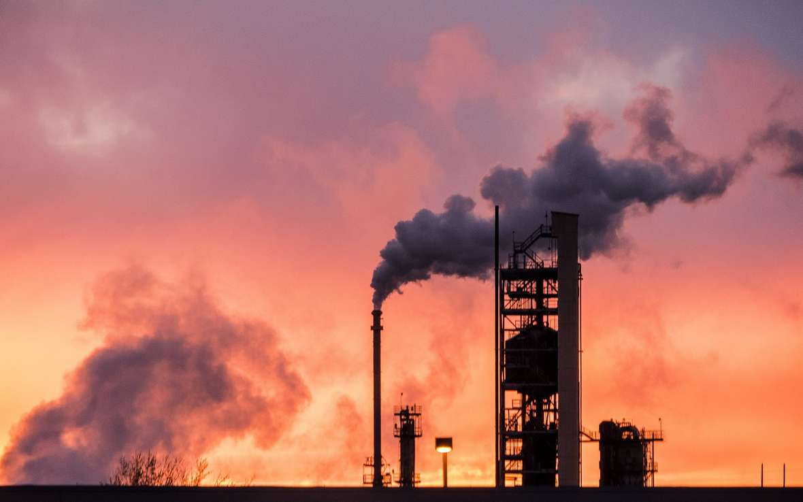

TerraTrack
The Ultimate Tool for Cultivating Eco-Friendly Habits
Why Care About Carbon Footprint?
Reduce Excessive Consumption
Monitoring your ecological footprint helps reduce excessive consumption of natural resources like water, energy, and raw materials. This ensures sustainability and prevents depletion for future generations.

Climate Change
A large carbon footprint contributes to greenhouse gas emissions, accelerating global warming. Reducing waste, energy use, and emissions can help slow climate change and its harmful effects.
Protecting Biodiversity
Overconsumption and pollution harm ecosystems, leading to loss of biodiversity and health risks like air and water pollution. A smaller eco-footprint helps preserve clean environments and protect wildlife.